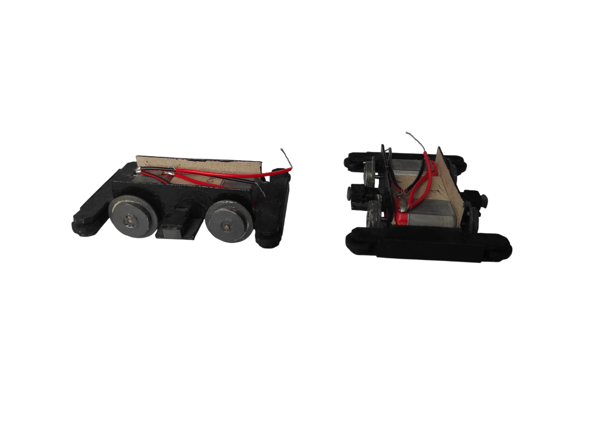
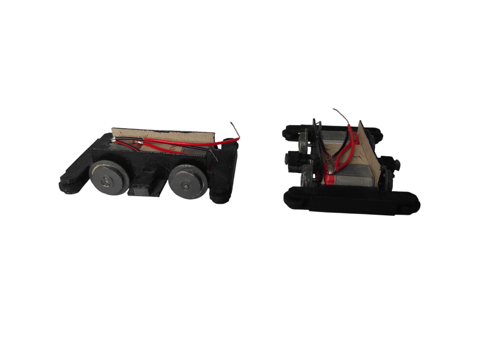

Corentin Lormier
Développeur front-end
Je suis actuellement en deuxième année de BUT informatique à l'IUT de Lille (Villeneuve-d'Ascq).
Plus tard, je compte me diriger vers le monde du jeu vidéo, ou vers le développement d'application.
J'ai déjà eu l'occasion de faire des projets de jeu vidéo (Morpion, Dots&Boxes, Memory, Labyrinthe) et dans le développement d'application (Gestion d'appariement d'étudiants lors d'un séjour linguistique).
Je suis également en recherche de stage d'avril à juin 2026.


 
